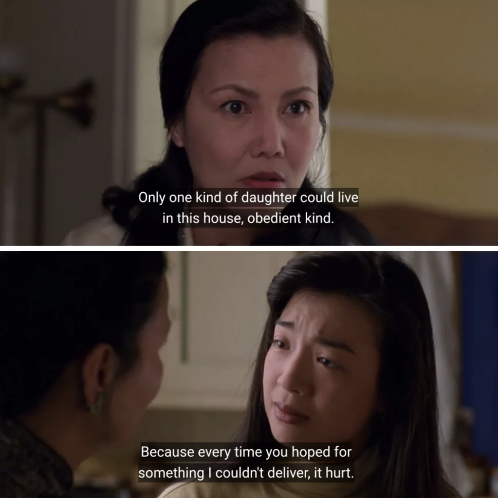
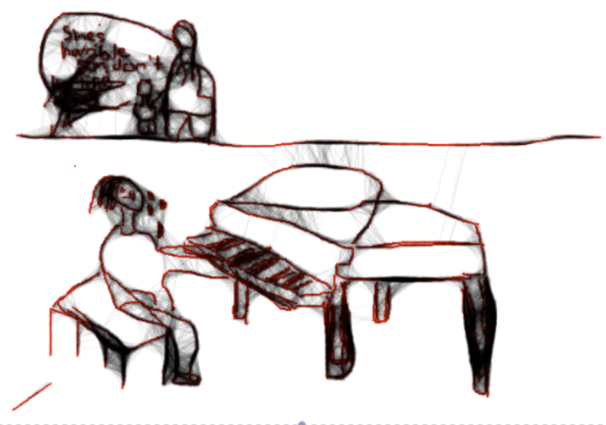
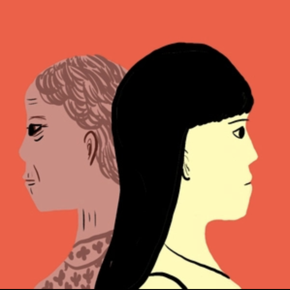

Cultural Psychology
Psychology Behind: Neither here, nor there: the liminal consciousness of Generation _1.5
Exploring the psychological struggles of immigrants caught between two worlds.
Exploring the psychological struggles of immigrants caught between two worlds.
You will not find anyone in this article. This article remains a wanderer. This article belongs to truly nobody. This article sometimes questions if it is an article.
That is because many articles that discuss the struggles of Generation _1.5 are buried deep underground in the media, overshadowed by stories about people the world considers worthy of recognition. However, those who belong to Generation _1.5, also known as gen _1.5ers, are accustomed to being forgotten.
They don't live on big billboards or magazine front pages. They live between two countries and are refused complete identities, often being reduced to hyphenated labels such as "Chinese-American," "Korean-British," or "Vietnamese-Australian."
To understand this liminal state of Generation _1.5, let us consider a short story from Amy Tan's The Joy Luck Club.
"Two Kinds" follows Jing-mei Woo, a Chinese-American girl, and her mother, who pressures her to become a piano prodigy. The mother's dreams reflect her immigrant hopes for success in America, while Jing-mei resists these expectations, leading to a painful clash of wills.
Themes of identity, cultural assimilation, parental expectation and generational conflict run through the story.
"Only two kinds of daughters," her mother insists, "Those who are obedient and those who follow their own mind."

This line embodies the tension between assimilation and cultural inheritance that so many Generation _1.5 immigrants feel.
Erik Erikson's theory of psychosocial development outlines eight stages that span the human lifespan. The stage most relevant to Generation _1.5 is Identity vs. Role Confusion, typically experienced during adolescence.
This stage involves developing a clear sense of self and personal values. Successful resolution leads to identity achievement—a strong sense of who one is and how one fits into society. Failure leads to role confusion, uncertainty, and difficulty making decisions about life's direction.
When this stage is disrupted—for example, by forced migration during formative years—adolescents may struggle with cultural dislocation, conflicting expectations, and feelings of alienation. Their sense of self may fracture under the weight of incompatible identities.
Generation _1.5 immigrants are unique because they belong to no man's land. You may have heard of Generation 1 (those who were born in a different country and then immigrated to their new country of residence) and Generation 2 (born in the new country, but at least one of their parents was born in a different country).

Generation _1.5 immigrants are defined as children of first-generation immigrants who arrived in the new nation before or during their early adolescence, typically between the ages of six and twelve. They are referred to as the "1.5 generation" because, despite spending their early years assimilating and integrating into the new society, they frequently retain their native tongue, cultural characteristics, and even national identities from their home country.
Because of this transformative, hybrid identity that most gen _1.5ers wear, they remain torn between two countries. Their two identities—their ethnicity and their nationality—are usually connected with a hyphen. While there are more subcategories in this category, including Generation _1.25 and Generation _1.75, Generation _1.5 is usually referred to as one community.
"Two Kinds" dramatizes this struggle in Jing-mei's battles with her mother. The piano serves as a symbol of assimilation, a mastery of American culture, and success as defined by immigrant dreams. Jing-mei's refusal to perform to her mother's standards represents a crisis of identity. She does not want to be the "obedient daughter" her mother expects, but she also struggles to define herself outside those expectations.

"I didn't want to do what she wanted. I wanted to be who I was."
This is Identity vs. Role Confusion in action. Generation _1.5 adolescents experience this conflict acutely: They want to belong, but don't want to betray the cultural memory of their parents.
Possessing the mind of an immigrant and yet the experiences of a second-generation individual, gen _1.5ers have way too much on their plates. They struggle with not feeling like they belong with their parents or their peers, but also with timezones, tongues, clocks, and accents. Every breath is a dilemma, and every word is pre-translated to fit the standards of their ancestors while also trying to appeal to their classmates.
Their dreams speak in accents that they deliberately try to hide. Their soul's syntax breaks in the mouths of _1.5 generations. Many change their names to sound "more English," and yet, somewhere between the deafening silence of two names, an entire childhood has collapsed. They inhabit displacement and departure and carry the weight of being "half-arrived."
As if that isn't enough, they are also caught up in the immigrant paradox, which occurs when the immigrant population outperforms the local population. The immigrant population usually shows higher rates of success because the immigrant household places special emphasis on education and income, which, in turn, manifests through small cracks in the form of severe issues such as anxiety or perfectionism.
This generation is the one betrayed by time. They were born too early in their home country, and yet arrived too late to another. Time fractures differently for those forced to immigrate mid-identity, which serves as a testament to the many studies that have shown that the impact of relocation on adolescents is often negative, leaving room for confused identities, low self-esteem, and even mourning for a country that never truly held them.
Generation _1.5 immigrants exist in a perpetual state of translation—not just of language, but of self. They are cultural interpreters for their parents while simultaneously trying to decode the unspoken rules of their new society. This constant translation work is exhausting and often invisible to those around them.
Their psychological landscape is marked by what researchers call "cultural bereavement"—a grief process for the loss of their homeland, combined with the challenge of not fully belonging to their new country. This creates a unique form of displacement that is both geographical and psychological.
Listen deeply. Not just to their English, but to the hesitations behind it. Let silence speak as a cultural interlocutor.
Affirm their identities. Do not reduce them to one culture or another. Let them be both, or neither, or something new.
Be patient with their past. Migration carves grief into strange shapes. It may show up as perfectionism, withdrawal, or quiet defiance.
Value their dual fluency and their ambicultural minds. Not just in language, but in perspective. They know things the world has not taught, only torn. Their minds are borderlands where memory and assimilation quarrel.
Create space, not a pressuring spotlight. Give them room to express who they are without expecting them to be representatives of entire cultures. Every individual is different.
Don't ask where they're really from. Ask instead where they feel most seen.
And perhaps most importantly: believe their story, even if it doesn't fit the narrative you expected, because the Generation _1.5 immigrant psyche is a palimpsest etched in exile and expectation.
While the psychological challenges facing Generation _1.5 immigrants are real and significant, it's important to recognize that this liminal space can also be a source of unique strength. These individuals often develop exceptional adaptability, cultural competence, and empathy. They become bridges between worlds, translators of experience, and advocates for understanding.
Their journey toward self-acceptance and identity integration, while difficult, can lead to a rich, multifaceted sense of self that embraces complexity rather than seeking simplification. In therapy and support groups, many Generation _1.5 immigrants find that sharing their experiences with others who understand their unique position can be profoundly healing.
"We are not lost between worlds—we are the bridge that connects them."
The story of Generation _1.5 is ultimately one of resilience, adaptation, and the human capacity to create meaning from displacement. Their experiences remind us that identity is not a fixed destination but a continuous journey of becoming.